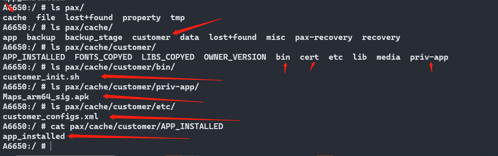

概要
客户资源包制作方法,原理介绍
原理介绍
通过新建/pax分区,并且烧录的时候,把文件系统烧录进去,pax.img 烧录到pax分区,把cache分区link到pax分区,
烧录客户资源包的时候,在cache目录,创建customer文件夹,并且里面,配对有bin,etc,app等目录,代码运行的时候,根据对应目录,安装对应文件.
或者过滤文件安装,安装完成后,创建APP_INSTALLED 等文件,写入app_installed 等字样,代表 客户资源包的app已经安装过

资源包制作
修改概要,以Smartweb 客户资源包举例

customer/customer-build.sh
添加项目的targetModel,平台代号,logo制作方法等,还可以直接指定签名脚本(上图的sign_file.py),默认的脚本签名对于某些服务器可能没适配

customer/Smartweb/A6650/
添加项目的文件夹,添加需要的资源包文件,包括填写OWNER_VERSION

customer/Smartweb/Smartweb-A6650.sh
填写具体的资源包制作脚本,注意CUSTOMER 要填写对于对应的客户名字,创建具体目录等

制作命令
./paxdroid/customer/customer-build.sh A6650 customer_res Smartweb
生成文件在W:\ssdCode\a6650_1\QSSI.12\paxdroid\customer\pack\customer_res
有客户资源包,还有ota包,都是可以使用paydroid tool导入

修改文字版
customer/customer-build.sh
+++ b/customer/customer-build.sh
@@ -436,6 +436,12 @@ elif [ "$product" == "M9200" ]; then
PLATFORM_NAME=M9200_Uniphiz_12.0.0_Kapok
SCREEN_RESOLUTION=720x1440
BOOTLOGO_BUILDER=build_bootlogo_by_bmp
+elif [ "$product" == "A6650" ]; then
+ targetModel=A6650
+ targetPlatform=PayDroid_12.0.0_Ginkgo
+ PLATFORM_NAME=A6650_PayDroid_12.0.0_Ginkgo
+ SCREEN_RESOLUTION=720x1600
+ BOOTLOGO_BUILDER=build_bootlogo_by_bmp
else
is_product_supported=false
fi
@@ -762,7 +768,9 @@ function build_resource_zip()
echo "zip -r ${CUSTOMER_RESOURCE_PATH}/resource-${owner_version}.zip customer/"
zip -r ${CUSTOMER_RESOURCE_PATH}/unsigned/resource-${owner_version}.zip customer/
if [ $is_sign_file_needed == "true" ];then
- sign_file ${CUSTOMER_RESOURCE_PATH}/unsigned/resource-${owner_version}.zip ${CUSTOMER_RESOURCE_PATH}/resource-${owner_version}_SIG.zip
+ #sign_file ${CUSTOMER_RESOURCE_PATH}/unsigned/resource-${owner_version}.zip ${CUSTOMER_RESOURCE_PATH}/resource-${owner_version}_SIG.zip
+ python ${ANDROID_ROOT}/paxdroid/customer/sign_file.py ${CUSTOMER_RESOURCE_PATH}/unsigned/resource-${owner_version}.zip
+ cp -f ${CUSTOMER_RESOURCE_PATH}/unsigned/resource-${owner_version}.zip ${CUSTOMER_RESOURCE_PATH}/resource-${owner_version}_SIG.zip
else
cp ${CUSTOMER_RESOURCE_PATH}/unsigned/resource-${owner_version}.zip ${CUSTOMER_RESOURCE_PATH}/resource-${owner_version}.zip
fi
customer/Smartweb/Smartweb-A6650.sh
#! /bin/bash
RES_DIR=$1
PRODUCT=$2
CUSTOMER=Smartweb
mkdir -p ${RES_DIR}/customer/etc
mkdir -p ${RES_DIR}/customer/priv-app
mkdir -p ${RES_DIR}/customer/bin
cp paxdroid/customer/${CUSTOMER}/${PRODUCT}/OWNER_VERSION ${RES_DIR}/customer/OWNER_VERSION
cp paxdroid/customer/${CUSTOMER}/${PRODUCT}/customer_configs.xml ${RES_DIR}/customer/etc/customer_configs.xml
cp paxdroid/customer/${CUSTOMER}/${PRODUCT}/Maps_arm64_sign.apk ${RES_DIR}/customer/priv-app/Maps_arm64_sign.apk
cp paxdroid/customer/${CUSTOMER}/${PRODUCT}/customer_init.sh ${RES_DIR}/customer/bin/customer_init.sh
customer/Smartweb/A6650/customer_configs.xml
<?xml version="1.0" encoding="UTF-8"?>
<paxdroid>
<customer name="ALL">
<!-- ###### ignore GMS packages start ###### -->
<package defaultModule="AndroidPlatformServices" isNoNeeded="true"/>
<package defaultModule="ConfigUpdater" isNoNeeded="true"/>
<!-- <package defaultModule="GoogleExtShared" isNoNeeded="true"/> -->
<package defaultModule="GoogleFeedback" isNoNeeded="true"/>
<package defaultModule="GoogleLocationHistory" isNoNeeded="true"/>
<!-- <package defaultModule="GoogleOneTimeInitializer" isNoNeeded="true"/> -->
<!-- <package defaultModule="GooglePackageInstaller" isNoNeeded="true"/> -->
<package defaultModule="GooglePartnerSetup" isNoNeeded="true"/>
<package defaultModule="GooglePrintRecommendationService" isNoNeeded="true"/>
<package defaultModule="GoogleSpeechServices" isNoNeeded="true"/>
<package defaultModule="GoogleCalendarSyncAdapter" isNoNeeded="true"/>
<package defaultModule="GoogleContactsSyncAdapter" isNoNeeded="true"/>
<!-- <package defaultModule="GoogleTTS" isNoNeeded="true"/> -->
<package defaultModule="GmsCore" isNoNeeded="false"/>
<package defaultModule="Phonesky" isNoNeeded="false"/>
<!-- <package defaultModule="WebViewGoogle" isNoNeeded="true"/> -->
<package defaultModule="Wellbeing" isNoNeeded="true"/>
<package defaultModule="GmsConfigOverlay" isNoNeeded="true"/>
<package defaultModule="OobConfig" isNoNeeded="true"/>
<!-- ###### ignore GMS packages end ###### -->
<package defaultModule="YouTube" isNoNeeded="true"/>
<package defaultModule="Chrome" isNoNeeded="true"/>
<package defaultModule="YTMusic" isNoNeeded="true"/>
<package defaultModule="Gmail2" isNoNeeded="true"/>
<package defaultModule="Duo" isNoNeeded="true"/>
<package defaultModule="Keep" isNoNeeded="true"/>
<package defaultModule="Photos" isNoNeeded="true"/>
<package defaultModule="Drive" isNoNeeded="true"/>
<package defaultModule="Videos" isNoNeeded="true"/>
<package defaultModule="CalculatorGoogle" isNoNeeded="true"/>
<package defaultModule="Maps" isNoNeeded="false"/>
</customer>
</paxdroid>
customer/Smartweb/A6650/customer_init.sh
#!/system/bin/sh
setprop pax.persist.enable.gms true
setprop pax.persist.model.name A6650G
customer/Smartweb/A6650/OWNER_VERSION
Smartweb-V1.00_20230721
apk安装目录
客户资源包安装目录包括app,和priv-app,两个目录对应apk权限签名不一样
app目录
/customer/app 使用apk自由签名就可以
priv-app
priv-app目录,权限高,需要平台签名,还需要权限对应修改,,不然android起不来,进入recovery
[2023-07-25 11:48:56].864 E/System ( 1219): ************ Failure starting system services
[2023-07-25 11:48:56].864 E/System ( 1219): java.lang.IllegalStateException: Signature|privileged permissions not in privapp-permissions allowlist: {com.tencent.android.qqdownloader (/pax/cache/customer/priv-app/yyb_sign.apk): android.permission.INSTALL_PACKAGES, com.tencent.android.qqdownloader (/pax/cache/customer/priv-app/yyb_sign.apk): android.permission.MOUNT_UNMOUNT_FILESYSTEMS, com.tencent.android.qqdownloader (/pax/cache/customer/priv-app/yyb_sign.apk): android.permission.REAL_GET_TASKS, com.tencent.android.qqdownloader (/pax/cache/customer/priv-app/yyb_sign.apk): android.permission.MANAGE_USERS, com.tencent.android.qqdownloader (/pax/cache/customer/priv-app/yyb_sign.apk): android.permission.PACKAGE_USAGE_STATS, com.tencent.android.qqdownloader (/pax/cache/customer/priv-app/yyb_sign.apk): android.permission.BATTERY_STATS, com.tencent.android.qqdownloader (/pax/cache/customer/priv-app/yyb_sign.apk): android.permission.CLEAR_APP_CACHE, com.tencent.android.qqdownloader (/pax/cache/customer/priv-app/yyb_sign.apk): android.permission.READ_LOGS, com.tencent.android.qqdownloader (/pax/cache/customer/priv-app/yyb_sign.apk): android.permission.UPDATE_APP_OPS_STATS, com.tencent.android.qqdownloader (/pax/cache/customer/priv-app/yyb_sign.apk): android.permission.FORCE_STOP_PACKAGES, com.tencent.android.qqdownloader (/pax/cache/customer/priv-app/yyb_sign.apk): android.permission.DELETE_PACKAGES, com.tencent.android.qqdownloader (/pax/cache/customer/priv-app/yyb_sign.apk): android.permission.ACCESS_CACHE_FILESYSTEM}
[2023-07-25 11:48:56].864 E/System ( 1219): at com.android.server.pm.permission.PermissionManagerService.systemReady(PermissionManagerService.java:4675)
[2023-07-25 11:48:56].864 E/System ( 1219): at com.android.server.pm.permission.PermissionManagerService.access$800(PermissionManagerService.java:194)
[2023-07-25 11:48:56].864 E/System ( 1219): at com.android.server.pm.permission.PermissionManagerService$PermissionManagerServiceInternalImpl.onSystemReady(PermissionManagerService.java:5150)
[2023-07-25 11:48:56].864 E/System ( 1219): at com.android.server.pm.PackageManagerService.systemReady(PackageManagerService.java:25058)
[2023-07-25 11:48:56].864 E/System ( 1219): at com.android.server.SystemServer.startOtherServices(SystemServer.java:2677)
[2023-07-25 11:48:56].864 E/System ( 1219): at com.android.server.SystemServer.run(SystemServer.java:895)
[2023-07-25 11:48:56].864 E/System ( 1219): at com.android.server.SystemServer.main(SystemServer.java:620)
[2023-07-25 11:48:56].864 E/System ( 1219): at java.lang.reflect.Method.invoke(Native Method)
[2023-07-25 11:48:56].864 E/System ( 1219): at com.android.internal.os.RuntimeInit$MethodAndArgsCaller.run(RuntimeInit.java:548)
[2023-07-25 11:48:56].864 E/System ( 1219): at com.android.internal.os.ZygoteInit.main(ZygoteInit.java:989)
mkdir -p ${RES_DIR}/customer/app
mkdir -p ${RES_DIR}/customer/priv-app
cp paxdroid/customer/${CUSTOMER}/${PRODUCT}/Maps_arm64_sign.apk ${RES_DIR}/customer/app/Maps_arm64_sign.apk
cp paxdroid/customer/${CUSTOMER}/${PRODUCT}/Maps_arm64_sign.apk ${RES_DIR}/customer/priv-app/Maps_arm64_sign.apk
客户资源包可以实现的功能
System Language: Japanese
Timezone: GMT+09:00
Use network provided time: yes
Add below preset Wi-Fi APN 增加下面预设的WIFI APN SSID：FGSETUP Pre-Shared Key TYPE：WPA2-PSK Personal passphrase：fLMAip8jRwfJ
Add EncryptWhiteList.txt to include com.pax.ft#,jp.sbpayment.omo.pax.emoney#,jp.co.netmove.spaydpax#,jp.sbpayment.omo.pax.emoney.dev#,jp.co.netmove.spaydpax.dev#
机器能够灭屏
Use network provided time: no
免去动态授权弹框
机器灭屏后不让机器休眠,资源包写一个属性，控制系统写一个唤醒锁
去掉截屏功能
Disable aac codec
开启Permission-Check（需要在manifest文件中使用use-permission来开启PED、打印机等的使用权限）
PED切换为Isolation Mode
禁止通过蓝牙传输/接收文件
放开对wifi接口的限制
应用白名单
默认关闭运行时权限
隐藏设置搜索框
添加开机LOGO
添加开机动画
access filter for security APIs
支持通过systool startproc Activity命令打开白名单customer_start_proc_whitelist.xml中的activity
支持调用ConnectivityManager中的requestNetwork方法能默认自动连接扫描出来的第一个网络
ccv使用48小时重启,设置persist.system.timer.cycle=true
添加customer_configs.xml,忽略系统的WebViewGoogle应用。(Android System WebView)。阻止 WebView应用更新
默认语言为繁体中文
预装Update和Launcher两个应用
默认输入法为Google注音输入法
设置密码默认关闭
默认亮度为80%
半灭屏时间为5分钟的问题
更新mdbdispatcherd文件
开机时状态栏和导航栏在开机完成时（接收到开机广播），才显示出来
打开USB安全选项
显示SIM卡的运营商名称
禁用OTA
禁用下拉状态栏
增加澳洲euronet customer支持使用资源包开机默认打开”设置->语言和输入法->实体键盘->显示虚拟键盘“
隐藏导航栏
禁用状态栏
禁用USB （开启USB Security Option）
支持support_phone功能，即支持电话、短信等功能
禁用PAX APP安装验签功能
系统默认特殊输入法
默认开启“battery percentage”选项
默认开启“exit power saving mode when charging”选项。
电源键+音量-截屏功能禁用
自动同步时区和24小时样式默认开启
应用可以在activty里的onkeyDown里拦截recet、home、back按键
不安装默认Laucnher3
禁用图库和文件管理器
禁用OTG
调试态下启用adb和mtp；release态禁用adb和mtp
禁用WIFI，禁用功能和隐藏下拉面板上的蓝牙快捷方式图标，隐藏设置的WIFI项
禁用热点，禁用功能和隐藏设置中的热点项